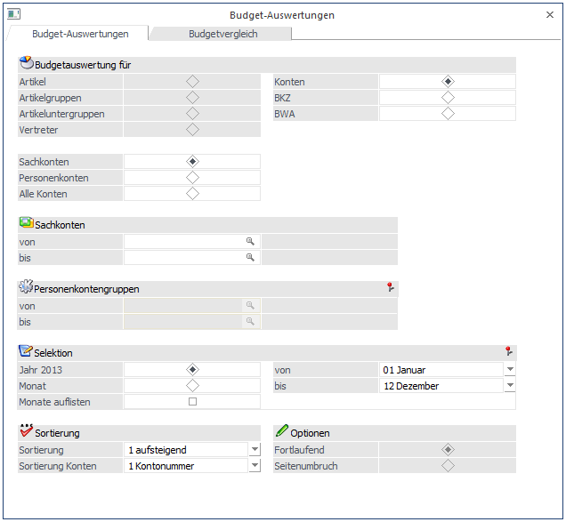
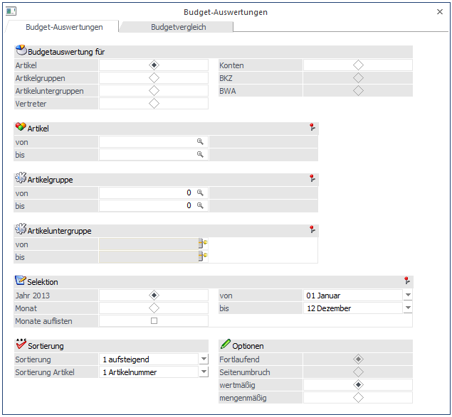

In der Budget Auswertung werden die bisher gebuchten Ist-Werte den Budgetansätzen gegenübergestellt.
Je nachdem, im welchem Programm Sie sich befinden, stehen unterschiedliche Optionen zur Verfügung:
WinLine FIBU
In der WinLine FIBU stehen die Optionen
ü Konten
ü BKZ
ü BWA
zur Verfügung.

WinLine FAKT
In der WinLine FAKT stehen die Optionen
ü Artikel
ü Artikelgruppen
ü Artikeluntergruppen
ü Vertreter
ü Konten
zur Verfügung.

Je nachdem, welcher Bereich eingeschränkt ausgewählt wurde, kann dieser noch eingeschränkt werden.
Ø Artikel
Wenn Sie eine Artikel-Budgetliste ausgeben wollen, haben Sie folgende Einschränkungskriterien zur Auswahl:
Ø Artikel von - bis
Ø Artikelgruppe von - bis
Ø Artikeluntergruppe von - bis
Werden keine Einschränkungen getroffen, wird eine Budgetliste über alle Artikel ausgegeben.
Ø Artikelgruppen
Artikelgruppen von - bis: Hier geben Sie die erste und letzte Artikelgruppennummer ein, die in die Auswertung mit einbezogen werden soll.
Ø Vertreter
Vertreternummer von - bis: Hier geben Sie die erste und letzte Vertreternummer ein, die in die Auswertung mit einbezogen werden soll.
Ø Konten
Es kann die Auswahl zwischen "Sachkonten", "Personenkonten" und "alle Konten" getroffen werden. Wurde die Option Personenkonten gewählt, kann auch noch nach Personenkontengruppen (entspricht den Kundengruppen) eingeschränkt werden.
Ø BKZ und BWA
Es kann jeweils eine Einschränkung von - bis durchgeführt werden.
Ø Auswerteform
Bei der Auswerteform kann entschieden werden, ob eine Jahresübersicht oder eine Auswertung von Monat bis Monat durchgeführt werden soll. Durch Aktivieren der Checkbox "Monate auflisten" wird jeder einzelne Monat mit seinen Budgetwerten angezeigt.
Ø Monatsauswertung von - bis
Hier können Sie die Auswertung auf einen bestimmten Zeitraum einschränken.
Ø Monate auflisten
Wenn aktiviert: Es werden auch die Monatssummen in der Auswertung angedruckt.
Ø Sortierung
Wenn eine Kontenliste gedruckt werden soll, kann die Sortierreihenfolge definiert werden. Dabei kann entschieden werden, ob die Liste sortiert nach Kontonummer, BKZ1, BKZ2 oder nach BWA1 - BWA3 erfolgen soll. Zusätzlich kann bestimmt werden, ob die Auswertung aufsteigend oder absteigend erfolgen soll.
Bei einer Auswertung nach Artikeln besteht die Möglichkeit, die Liste nach Artikelnummer, nach Artikelgruppe oder nach Artikeluntergruppe zu sortieren.
In der Liste werden neben den Ist-Werten (das sind die bereits gebuchten Werte) die Budgetwerte 1 und 2 sowie die Abweichung zu den Ist-Werten angezeigt.
Achtung:
Abhängig von der Einstellung in den FAKT-Parameter "Summierung bei Budget-Istwerten" werden die IST-Werte für Artikelgruppen und Artikeluntergruppen nach einer von den folgenden zwei Optionen berechnet:
ü Istwerte berechnen "nur Hauptartikel": mit dieser Variante werden, in Bezug auf Ausprägungsartikel, nur "Hauptartikel mit Ausprägungen" in die Berechnung mit einbezogen. Ebenfalls berücksichtigt werden dabei Ausprägungen, die im Lagerstamm auf den Hauptartikel verweisen
ü Istwerte berechnen "ohne Hauptartikel mit Ausprägungen": bei dieser Berechnungsmethode werden die "Hauptartikel ohne Ausprägungen" und die "Ausprägungen" berechnet. Ausprägungen, die im Lagerstamm auf den Hauptartikel verweisen, werden bei dieser Variante nicht berücksichtigt.